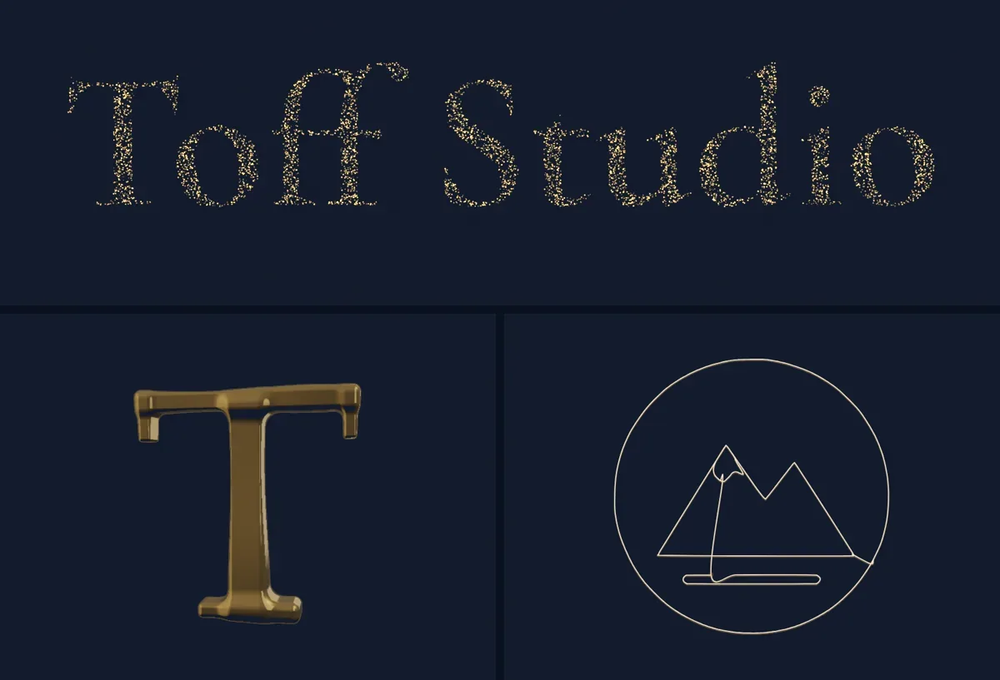

<!-- The Lab, pointed to from the main page. Paste after "Your logo, drawn in one continuous line". {LAB} = the Lab page's address. -->
<section class="r3-section lt-section" id="lab-teaser" aria-labelledby="lt-title" data-brief="The Lab">
  <div class="r3-inner lt">
    <a class="lt-pic" href="{LAB}" tabindex="-1" aria-hidden="true"></a>
    <div class="lt-text">
      <h2 class="r3-h2" id="lt-title">There’s more in the Lab</h2>
      <p class="r3-lede">The Lab is a separate page of experiments in what a browser can draw by itself. We keep them there so this page stays quick to load. Every one of them can go on your site.</p>
      <ul class="lt-list">
        <li><a href="{LAB}#build-itself">A section that types out its own code</a></li>
        <li><a href="{LAB}#particles-band">Lettering made of a few thousand gold specks</a></li>
        <li><a href="{LAB}#one-line">Your logo in one line, with sample logos to try</a></li>
        <li><a href="{LAB}#liquid-gold">A letter cast in liquid gold that turns to face you</a></li>
        <li><a href="{LAB}#moving-ink">Ink you can stir with a finger</a></li>
      </ul>
      <a class="lt-go" href="{LAB}">Open the Lab <span aria-hidden="true">→</span></a>
    </div>
  </div>
</section>
